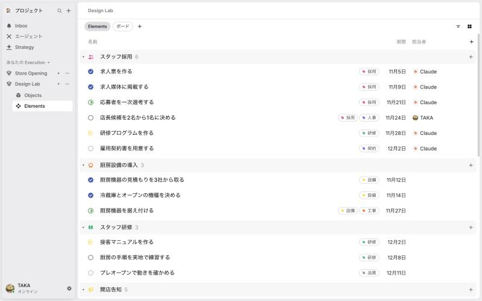

バラバラなチャネルを統合し、
組織を正しい方向に。
メールもチャットも、業務アプリも社内システムも。APIでつないで依頼をClaywareに集め、いつ・何を・なぜ・誰がやるのかを決めます。


ただのタスク管理に見えて、ハブになる。
会社がもう使っているアプリにつながり、届いた依頼ごとに4つを決めます。
つながる窓口
- Gmail
- Microsoft 365
- Google Drive
- GitHub
- フォームや社内システム（MCP・HTTP）
- いつ
- すべてのタスクに期限
- 何を
- 行動の最小単位まで分ける
- なぜ
- どの目標のためか
- 誰が
- 人か、AIか
流れが決まったら、あとは自動で。
- やり方を書いておく手順、止める条件、成果物の形をひとつに。
- 勝手に始まる決まった時刻か、何かが届いたときに。
- 止まっても続く始めた人の権限で動き、止まった所から再開。